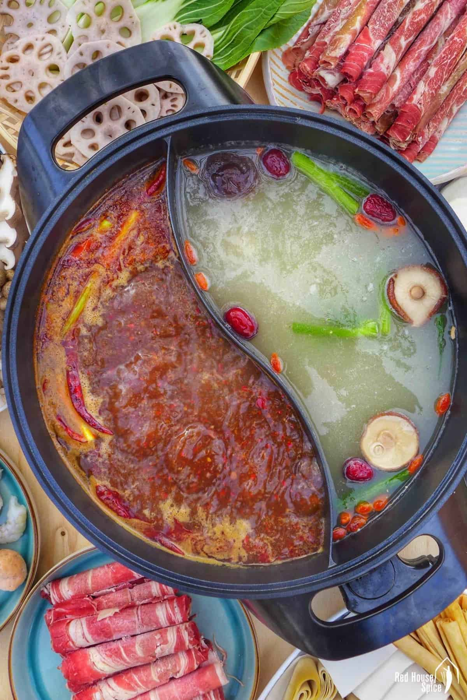

Taiwanese Hotpot

This recipe requires time and patience. It is very much well worth it in the end.
You will also need some special ingredients that can be found at a well stocked asian market.
Broth
Ingredients
- 5 chicken drum sticks
- 5 bone-in thighs
- 2 bundles of green onion, cut in half
- One large knob sliced ginger, about 3-4 inches
- One head of garlic, cut in half
Make It
- Add all ingrediens into a large pot
- Add water into the pot, just enough to cover all the ingredients.
- Bring the ingredients to a boil, then lower to a simmer for 2 hours until the brothe becomes lightly colored.
- Strain. Save broth by freezing if desired.
Aromatics
- 4 dried shiitake
- Pinch of white pepper
- 3-4 jujbe
- 2 inch knob of ginger peeled and sliced
- 4 green onions sliced into 2 inch segments
~Add aromatics to the broth
Meats and Noodles
- Pick out any meat you like. Make sure it is in thin slices.
Recommended Meats:
- Brisket
- Pork Belly
- Lamb Meatballs
- Pick any type of noodles you like. Make sure to review how to cook the noodles properly.
Recommended Noodles to try:
- Udon
- Egg Noodle
- Saimin Noodles
- Somen Noodles
- Make any sides that you want to eat with your hotpot.
Recommended sides:
- Nappa Cabbage
- Anoki Mushrooms
- Tofu
- Dichon Radish
- Garlic Sesame Bean Curd Dipping Sauce
- Ponzu Sauce